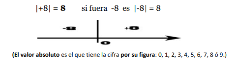

2.Valor relativo y valor absoluto
El valor absoluto: Es el que representa la cantidad sin tener en cuenta su signo o su sentido. Es decir, es el valor que expresa el número o dígito.
Ejemplo: El valor absoluto de +8 es 8 y se representa entre dos barras verticales.

El valor relativo: es el que tiene la cifra por el lugar que ocupa con respecto a otros en
la composición numérica: unidades, decenas, centenas,…
Ejemplo: dado la siguiente cantidad 6868, expresar valor absoluto y relativo de cada cifra.
- El valor absoluto de los dos 6 es el mismo, es decir 6 ; y el de los dos 8 también es igual, es decir 8
- El valor relativo del 6 de la izquierda es 6000 por ocupar el lugar de las unidades de millar
- El valor relativo del 6 de la derecha es 60 por ocupar el lugar de las decenas.
- El valor relativo del primer 8 a la izquierda es 800 por ocupar el lugar de las centenas
- El valor relativo del 8 a la derecha es 8 por ocupar el lugar de las unidades